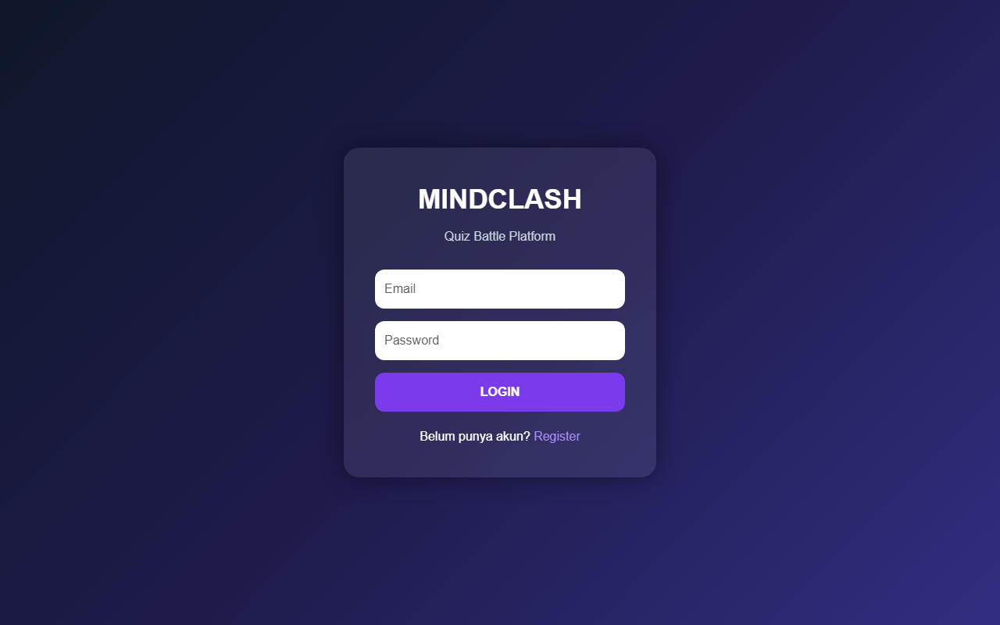
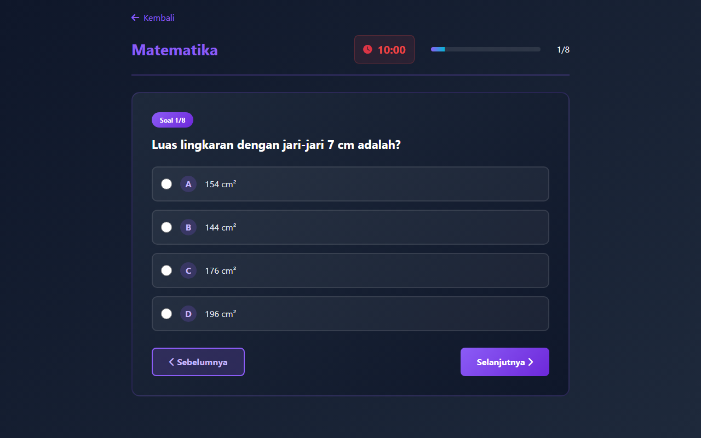
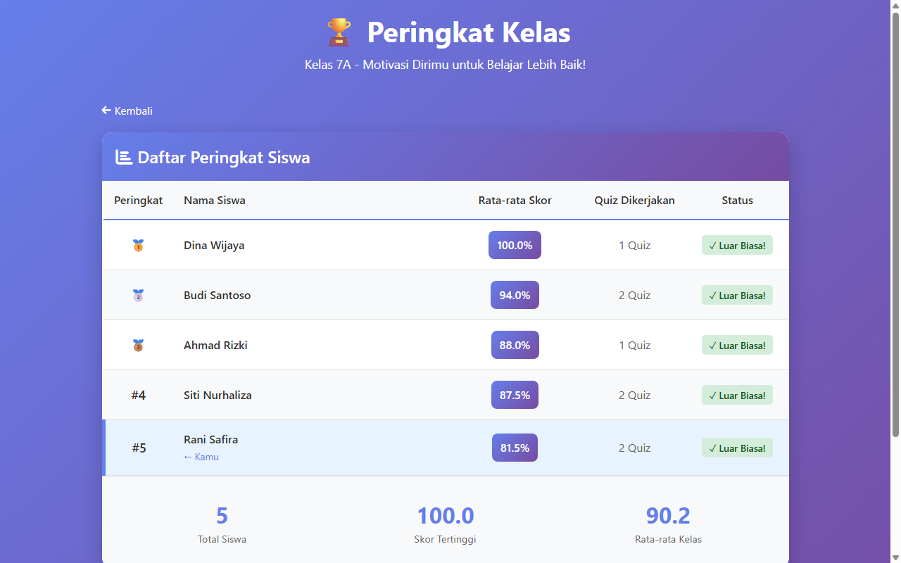
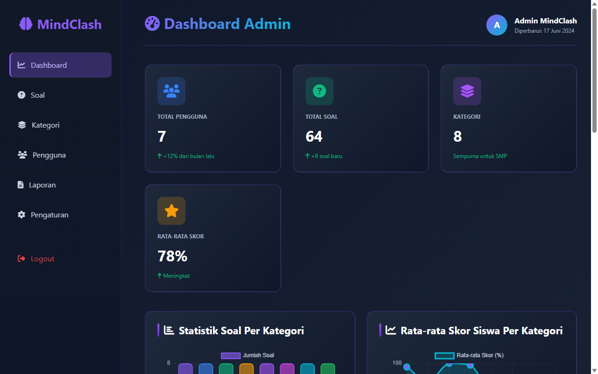

Puji dan syukur penulis panjatkan kehadirat Allah SWT atas segala rahmat, hidayah, dan karunia-Nya, sehingga penulis dapat menyelesaikan laporan Dokumen Aplikasi Proyek 1 yang berjudul "MindClash: Solusi Pembelajaran Interaktif Masa Kini Melalui Pendekatan Gamifikasi Intensif" dengan baik dan tepat waktu.
Proyek ini disusun sebagai bagian dari luaran mata kuliah Proyek 1 pada Program Studi D-IV Teknik Informatika di Universitas Logistik dan Bisnis Internasional (ULBI) tahun akademik 2026-2027. Melalui proyek ini, diharapkan mahasiswa mampu mengintegrasikan keahlian pengembangan aplikasi web dengan kebutuhan riil di dunia pendidikan, khususnya dalam meningkatkan keterlibatan belajar siswa.
Dalam penyusunan laporan ini, penulis menyadari bahwa keberhasilan proyek ini tidak lepas dari bimbingan, dukungan, dan bantuan dari berbagai pihak. Oleh karena itu, penulis ingin menyampaikan terima kasih yang sebesar-besarnya kepada:
Penulis menyadari bahwa laporan ini masih jauh dari sempurna. Oleh karena itu, kritik dan saran yang membangun dari pembaca sangat diharapkan demi penyempurnaan laporan maupun pengembangan aplikasi di masa yang akan datang.
Akhir kata, semoga dokumen aplikasi ini dapat memberikan manfaat yang nyata bagi pengembangan dunia teknologi pendidikan interaktif di Indonesia.
Bandung, Juli 2026
Kelompok 30
Saya sebagai Pembimbing Kelompok 30 dengan Anggota:
| Nama Mahasiswa 1 | Dio Ahmad Alfarisyi |
| NPM | 714250015 |
| Nama Mahasiswa 2 | Mohammad Alif Syahiir |
| NPM | 714250014 |
| Judul Proyek 1 | Solusi Pembelajaran Interaktif Masa Kini Melalui Pendekatan Gamifikasi Intensif (Aplikasi MindClash) |
Menyatakan bahwa mahasiswa tersebut telah menyelesaikan semua luaran dengan kemajuan: 100% (Seratus Persen).
Bagian yang belum diselesaikan (Jika ada) :
........................................................................................................................................................................
........................................................................................................................................................................
Adapun penulisan laporan Akhir Proyek 1 telah diselesaikan seluruhnya (100%) Dengan demikian saya mengajukan mahasiswa tersebut untuk mengikuti
sidang Proyek 1. Apabila ternyata pernyataan saya tersebut tidak benar, maka saya menyetujui penundaan sidang termasuk pembatalan sidang Proyek 1 untuk mahasiswa bimbingan saya tersebut sesuai aturan yang berlaku.
Bandung, 4 Juli 2026
Mahasiswa 1
Dio Ahmad Alfarisyi
NPM : 714250015
Mahasiswa 2
Mohammad Alif Syahiir
NPM : 714250014
Dosen Pembimbing
________________________
NIK :
< Solusi Pembelajaran Interaktif Masa Kini Melalui Pendekatan Gamifikasi Intensif >
Dokumen Proyek 1 ini telah diperiksa, disetujui dan disidangkan
Di Bandung, 4 Juli 2026
Oleh :
Penguji Pendamping,
________________________
NIK:
Penguji Utama,
________________________
NIK:
Pembimbing,
________________________
NIK:
Koordinator Proyek 1,
________________________
NIK:
Menyetujui,
Ketua Program Studi D-IV Teknik Informatika,
________________________
NIK:
Perkembangan teknologi informasi yang masif di era digital telah membawa transformasi besar pada sektor pendidikan, khususnya dalam restrukturisasi media pembelajaran [1]. Keberhasilan suatu proses edukasi sangat dipengaruhi oleh tingkat ketertarikan dan motivasi intrinsik peserta didik. Namun, dalam realitasnya, ekosistem pembelajaran konvensional masih sering didominasi oleh metode satu arah yang bersifat kaku dan monoton [2].
Kondisi tersebut berdampak langsung pada penurunan atensi, rendahnya keterlibatan aktif, serta minimnya motivasi belajar siswa di kelas [2]. Oleh karena itu, penerapan metode Game-Based Learning (GBL) atau gamifikasi menjadi urgensi krusial sebagai instrumen alternatif yang mampu merancang ruang belajar digital yang adaptif, berpusat pada siswa, serta sejalan dengan kebutuhan dinamika pendidikan modern saat ini [1].
Keberhasilan suatu proses pembelajaran tidak terlepas dari peran sentral seorang guru dalam merancang ekosistem belajar yang kondusif, menantang, dan menyenangkan. Sebagaimana ditegaskan oleh [3], guru merupakan komponen terpenting yang menentukan keberhasilan peserta didik, sehingga seorang pendidik dituntut mampu memilih metode dan media pembelajaran yang tepat guna membangun suasana belajar yang mampu membangkitkan semangat siswa. Tuntutan ini menjadi semakin relevan mengingat masih dominannya pendekatan konvensional yang bersifat satu arah dan minim interaksi, yang berdampak langsung pada menurunnya partisipasi aktif, melemahnya konsentrasi, serta terkikisnya motivasi intrinsik siswa di dalam kelas.
Dalam upaya mengatasi problem matinya partisipasi aktif siswa, platform edukasi berbasis gamifikasi populer seperti Quizizz dan Kahoot! telah banyak diadopsi secara luas sebagai instrumen alternatif yang mampu merancang ruang belajar digital yang adaptif dan berpusat pada siswa. Adopsi yang masif ini ditopang oleh bukti empiris yang kuat: [3] membuktikan secara eksperimental bahwa penggunaan Kahoot menghasilkan perbedaan motivasi belajar yang signifikan antara kelas eksperimen dan kelas kontrol dengan nilai signifikansi 0,000 < 0,05, menegaskan bahwa platform ini mampu merangsang keaktifan dan kecepatan berpikir siswa secara terukur. Senada dengan hal tersebut, [4] melalui studi komparatifnya mengungkapkan bahwa Kahoot sangat efektif meningkatkan motivasi melalui sistem kompetitif berbasis leaderboard untuk sesi langsung di kelas, sementara Quizizz unggul dalam fleksibilitas belajar mandiri dengan laporan hasil yang lebih terperinci untuk keperluan evaluasi formatif.
Dengan demikian, kajian mengenai solusi pembelajaran interaktif melalui pendekatan gamifikasi intensif menjadi penting untuk dilakukan guna memberikan panduan praktis bagi pendidik dalam merancang pengalaman belajar yang lebih adaptif dan bermakna bagi generasi pelajar digital saat ini. Berbagai riset membuktikan bahwa integrasi platform interaktif semacam Quizizz sangat efektif digunakan sebagai media evaluasi pembelajaran digital karena mampu menstimulasi antusiasme kompetitif siswa melalui visualisasi yang interaktif [5].
Meskipun begitu, penggunaan platform umum tersebut di lapangan masih memiliki batasan-batasan tertentu. Model kuis yang ada sekarang biasanya terlalu fokus pada seberapa cepat seseorang menjawab, sehingga siswa cenderung menebak jawaban dengan spekulatif untuk mendapatkan posisi yang baik di papan peringkat. Selain itu, ketergantungan platform kuis biasa pada adanya interaksi banyak pemain secara langsung membuat proses belajar sendiri yang dilakukan secara tidak bersamaan menjadi kurang menantang dan kurang terkelola dengan baik.
Dari perbedaan fungsi tersebut, dibuatlah sebuah sistem informasi baru yang disebut MindClash dengan fokus pada sub-tema "Solusi Pembelajaran Interaktif Saat Ini Melalui Pendekatan Gamifikasi yang Intensif". Aplikasi ini tidak hanya dibuat sebagai alat penilaian digital biasa, tetapi juga sebagai platform untuk belajar sendiri yang menggabungkan elemen permainan dengan cara yang mendalam.
MindClash memperkenalkan inovasi baru dengan sistem nyawa (mode bertahan hidup) serta visualisasi umpan balik langsung berupa penjelasan konteks setelah setiap soal. Pendekatan gamifikasi yang intens ini bertujuan untuk memberikan dorongan psikologis yang positif bagi pengguna. Hal ini dilakukan agar mereka dapat melatih kemampuan berpikir kritis, membantu mereka melakukan evaluasi diri ketika terjadi kesalahan, dan juga memberikan kebebasan bagi siswa untuk mengembangkan keterampilan mereka kapan saja secara mandiri tanpa harus bergantung pada kehadiran orang lain.
Untuk mewujudkan sistem kuis yang dinamis dan terstruktur, aplikasi MindClash dibuat dengan arsitektur yang memisahkan bagian frontend dan backend (arsitektur client-server). Ini bertujuan untuk meningkatkan fleksibilitas dan kinerja sistem. Dalam bagian tampilan pengguna, aplikasi ini dirancang dengan antarmuka depan menggunakan Laravel Blade Template yang disempurnakan dengan Tailwind CSS untuk menyajikan visualisasi yang responsif, interaktif, dan mudah digunakan. Di sisi backend, digunakan bahasa pemrograman PHP dengan framework Laravel 12 yang terhubung langsung dengan sistem basis data relasional. PHP dipilih karena penggunaannya yang luas di industri serta kemudahan dalam proses deployment di berbagai lingkungan server, sementara Laravel dipilih karena fitur-fitur bawaannya seperti sistem routing, ORM Eloquent, dan middleware yang secara signifikan mempercepat proses pengembangan sekaligus menjaga keteraturan struktur kode backend.
Dengan kerja sama teknologi ini, pengelolaan data yang berubah-ubah melalui fitur Buat, Baca, Perbarui, dan Hapus (CRUD) bisa berjalan dengan baik. Sistem ini dapat memastikan bahwa setiap proses manajemen data mengenai soal, riwayat sesi permainan, pengumpulan skor di papan peringkat, dan pencapaian lencana dapat berjalan dengan cara yang teratur, konsisten, dan aman. Dengan desain arsitektur yang kuat menggunakan PHP dan Tailwind CSS, aplikasi MindClash diharapkan bisa menjadi alat belajar yang interaktif, menantang, dan berkelanjutan untuk meningkatkan kualitas pemahaman akademis para siswa.
Aplikasi yang dikembangkan dalam proyek ini diberi nama MindClash. Nama "MindClash" merupakan gabungan dari dua kata dalam bahasa Inggris, yakni Mind yang berarti kecerdasan dan Clash yang berarti kompetisi, sehingga secara keseluruhan MindClash dapat dimaknai sebagai "Kompetisi Kecerdasan". Pemilihan nama ini merepresentasikan visi utama aplikasi, yaitu menciptakan sebuah arena belajar digital di mana pengguna tidak hanya sekadar menjawab soal, tetapi juga ditantang untuk berkompetisi secara intelektual bersama sesama pengguna. Sebagai sebuah platform pembelajaran interaktif berbasis gamifikasi, MindClash dirancang untuk mengubah pengalaman belajar yang pasif menjadi sebuah kompetisi kecerdasan yang menantang, menyenangkan, dan bermakna.
Ide pengembangan MindClash berangkat dari pengamatan terhadap permasalahan nyata yang kerap dijumpai dalam proses belajar sehari-hari. Berdasarkan kondisi yang telah dipaparkan pada latar belakang, munculnya ide aplikasi ini didasari oleh dua permasalahan pokok, yakni:
Melalui integrasi kedua permasalahan harian tersebut, MindClash diposisikan bukan sekadar alat evaluasi digital biasa, melainkan sebagai solusi pembelajaran interaktif yang komprehensif bagi siswa untuk mengembangkan kecerdasan dan kemampuan berpikir kritis secara mandiri, kapan saja, dan di mana saja.
Mengembangkan platform pembelajaran interaktif berbasis gamifikasi intensif yang mampu meningkatkan motivasi dan partisipasi aktif siswa dalam belajar, sekaligus menghadirkan pengalaman belajar yang menantang dan menyenangkan melalui integrasi elemen permainan yang mendalam ke dalam proses evaluasi dan penguatan pemahaman materi.
MindClash adalah sebuah platform pembelajaran interaktif (gamified learning) berbasis web yang dirancang untuk meningkatkan motivasi belajar siswa SMP melalui pendekatan kompetisi yang menyenangkan. Aplikasi ini bekerja dengan cara mengubah proses belajar konvensional menjadi pengalaman bermain melalui kuis pilihan ganda yang dikelompokkan berdasarkan topik atau mata pelajaran, dipadukan dengan sistem duel/battle antar pengguna secara real-time ke dalam satu platform yang terpusat.
Aplikasi ini bisa digunakan sebagai tempat belajar sekaligus berlomba. Siswa bisa memilih topik kuis yang ingin dipelajari, menghadapi tantangan dari siswa lain dalam sesi pertandingan untuk menjawab soal dengan lebih cepat dan lebih benar, mendapatkan poin atau XP setiap kali mereka menyelesaikan kuis atau pertandingan, serta memantau letak mereka di leaderboard yang menampilkan peringkat pengguna secara berkala.
Dengan sistem kompetisi dan poin ini, proses belajar yang dulu hanya dilakukan secara pasif kini menjadi lebih aktif, terukur, dan mendorong siswa untuk terus meningkatkan pemahaman terhadap materi.
Berdasarkan batasan aktor sistem yang telah dijelaskan pada sub-bab Ruang Lingkup, pengguna yang terlibat secara langsung dalam sistem MindClash dibatasi pada 2 (dua) peran utama, yaitu Admin dan Siswa (Pengguna). Kedua peran ini memiliki hak akses yang berbeda sesuai dengan fungsi dan tanggung jawab masing-masing di dalam sistem, sebagaimana dijabarkan pada tabel berikut.
| No | Aktor / User | Deskripsi | Hak Akses |
|---|---|---|---|
| 1 | Admin | Pihak yang bertanggung jawab penuh dalam mengelola seluruh data dan konten di dalam sistem MindClash. |
a. Melakukan CRUD (Buat, Baca, Perbarui, Hapus) data soal kuis dan kategori. b. Memantau riwayat sesi permainan siswa. c. Mengelola akumulasi skor pada leaderboard. d. Mengatur pencapaian lencana (badges). |
| 2 | Siswa (Pengguna) | Pengguna akhir yang memanfaatkan aplikasi secara mandiri sebagai media belajar sekaligus berkompetisi. |
a. Mengakses dan mengerjakan kuis berdasarkan kategori pelajaran. b. Memilih Mode Kuis/Kategori Kuis. c. Menerima umpan balik/penjelasan konteks setelah menjawab kuis. d. Melihat posisi dan peringkat pada leaderboard kelas. e. Melacak lencana pencapaian (badges) yang diperoleh. |
Kebutuhan fungsional merupakan fitur-fitur utama yang harus disediakan oleh sistem MindClash agar dapat berjalan sesuai dengan tujuan dan ruang lingkup yang telah ditetapkan. Berdasarkan pembagian aktor pada sub-bab sebelumnya, kebutuhan fungsional dikelompokkan menjadi 2 (dua) bagian, yaitu kebutuhan fungsional untuk Admin dan kebutuhan fungsional untuk Siswa (Pengguna).
Kebutuhan non-fungsional merupakan kebutuhan yang berkaitan dengan kualitas dan karakteristik operasional sistem MindClash, di luar fitur-fitur utama yang telah dijabarkan pada sub-bab sebelumnya. Berdasarkan arsitektur dan teknologi yang digunakan dalam pengembangan aplikasi, kebutuhan non-fungsional MindClash dikelompokkan menjadi 3 (tiga) aspek, yaitu kecepatan sistem, kemudahan penggunaan, dan keamanan sederhana.
Aplikasi MindClash menggunakan pola arsitektur Model-View-Controller (MVC) yang ditawarkan oleh framework Laravel. Sistem ini dikembangkan secara monolitik modern, di mana backend dan frontend terintegrasi dalam satu repositori namun dipisahkan secara logis. Komunikasi antara frontend (klien) dan backend (server) dilakukan melalui protokol HTTP/HTTPS.
Berikut adalah diagram hubungan arsitektur sistem MindClash:
Deployment Diagram di bawah memetakan penempatan fisik komponen perangkat lunak (klien browser, Laravel web server, MySQL database) ke dalam node perangkat keras beserta protokol komunikasinya:
Use Case Diagram di bawah menggambarkan hubungan interaksi antara aktor (Siswa dan Admin) dengan fungsionalitas sistem kuis MindClash (termasuk fitur multiplayer room):
Workflow utama sistem menggambarkan langkah-langkah penggunaan aplikasi dari sudut pandang Siswa (saat pengerjaan kuis mandiri dan kuis bersama di Multiplayer Room) serta Admin (saat mengelola soal).
Class diagram di bawah menggambarkan relasi antar model data inti dalam sistem MindClash, termasuk penambahan modul multiplayer:
Struktur database relasional digambarkan melalui entitas-entitas tabel yang terhubung untuk menyimpan data secara aman dan terstruktur. Berikut detail penjelasan tipe data database dan relasi antar tabel pada aplikasi MindClash:
users:
id (bigint unsigned, PK, Auto Increment): Identitas unik bertipe integer besar (8 byte).name (varchar(255)): String alfanumerik nama lengkap pengguna.email (varchar(255), Unique): Surel login yang bersifat unik di sistem.avatar (varchar(255), Nullable): Menyimpan lokasi berkas foto profil pengguna.password (varchar(255)): Kata sandi terenkripsi aman menggunakan algoritma BCrypt.role (enum('admin','user')): Menetapkan pembagian hak akses (admin vs siswa).class (varchar(255), Nullable): Kelas siswa (misal: "7A", "7B").remember_token (varchar(100), Nullable): Token untuk fungsi "tetap masuk".categories:
id (bigint unsigned, PK): Identitas unik untuk kategori kuis.name (varchar(255)): Nama kategori kuis pelajaran (Matematika, IPA, dll).description (text, Nullable): Penjelasan lengkap kategori pelajaran.time_limit (int): Durasi pengerjaan kuis dalam satuan menit.questions:
id (bigint unsigned, PK): Identitas unik butir pertanyaan.category_id (bigint unsigned, FK): Menghubungkan soal ke kategori kuis (Cascade Delete).question_text (text): Teks pertanyaan berukuran besar.option_a / b / c / d (varchar(255)): Pilihan opsi ganda.correct_answer (char(1)): Kunci jawaban benar (bernilai 'A', 'B', 'C', atau 'D').quiz_results:
id (bigint unsigned, PK): Identitas unik hasil pengerjaan kuis.user_id (bigint unsigned, FK): Merujuk ke tabel users.id (Cascade Delete).category_id (bigint unsigned, FK): Merujuk ke tabel categories.id (Cascade Delete).room_id (bigint unsigned, FK, Nullable): Merujuk ke tabel rooms.id jika dikerjakan melalui Multiplayer Room. Bernilai NULL untuk kuis belajar mandiri (single player).total_questions (int): Jumlah butir soal kuis.correct_answers (int): Jumlah jawaban benar siswa.score (int): Nilai kuis akhir siswa skala 0-100.answers (text, Nullable): JSON data jawaban terpilih siswa (id_soal => jawaban) untuk diulas kembali.rooms:
id (bigint unsigned, PK, Auto Increment): Identitas unik untuk kuis room berkelompok.code (varchar(255), Unique): Kode acak unik penanda room kuis untuk bergabung.name (varchar(255)): Nama room kuis yang ditentukan host.host_id (bigint unsigned, FK): Menghubungkan room ke pembuat room (Cascade Delete).category_id (bigint unsigned, FK): Menghubungkan room ke kategori mata pelajaran kuis.status (varchar(255)): Status kuis berjalan: "waiting", "active", "finished".room_users (Pivot Table):
id (bigint unsigned, PK): Identitas unik entri pivot.room_id (bigint unsigned, FK): Menghubungkan ke tabel rooms.id.user_id (bigint unsigned, FK): Menghubungkan ke tabel users.id.room_users.Desain visual MindClash dirancang dengan mengedepankan prinsip kenyamanan mata dan kemudahan interaksi siswa. Tema gelap yang modern dikombinasikan dengan efek neon keunguan memberikan getaran "e-sports" yang disukai siswa, sehingga proses belajar terasa menyenangkan layaknya bermain gim. Elemen penting seperti sisa waktu pengerjaan diletakkan di bagian atas agar mudah terpantau tanpa mengganggu fokus membaca soal.
Berikut adalah rancangan mockup dan wireframe tata letak dari antarmuka halaman utama aplikasi web MindClash:
Desain antarmuka halaman masuk (*login page*) siswa dan admin:

Desain dasbor utama siswa setelah berhasil masuk ke sistem. Pada menu utama di halaman ini, berdampingan dengan tombol Lihat Peringkat Kelas, terdapat tombol akses cepat Mode Mabar (Rooms) untuk pengerjaan kuis kelompok secara simultan:
Desain antarmuka pengerjaan kuis interaktif dengan timer dan progress bar:

Desain antarmuka peringkat kelas siswa:

Berikut adalah tampilan nyata (*screenshot* asli) dari antarmuka aplikasi web **MindClash** beserta rincian elemen penting yang disajikan:
Dasbor utama menyajikan menu pemilihan kategori kuis secara visual, ringkasan statistik belajar siswa, serta tombol navigasi Mode Mabar (Rooms) yang terletak di samping kanan tombol Lihat Peringkat Kelas:
Halaman ini menampilkan butir soal kuis secara interaktif per halaman dengan visualisasi sisa waktu hitung mundur dan kemajuan kuis:
Leaderboard menyajikan rangking kompetisi antarsiswa sekelas secara transparan berdasarkan rata-rata nilai kuis:
Halaman manajemen admin untuk mengontrol soal, kategori, riwayat kuis siswa, dan cetak PDF:

Penjelasan detail fungsi bagian-bagian antarmuka kuis:
Aplikasi diimplementasikan dengan spesifikasi teknologi terkini:
Susunan berkas dan folder penting proyek MindClash disajikan di bawah ini:
Berikut langkah singkat untuk memasang aplikasi MindClash di komputer lokal Anda:
proyek1Mindclash ke direktori web server (seperti C:\laragon\www\).composer install && npm install
.env dengan menyalin berkas contoh:
copy .env.example .env
.env tersebut, lalu ketik perintah penyiapan kunci keamanan aplikasi:
php artisan key:generate
proyek1mindclash). Setelah itu jalankan migrasi tabel dan seeding data simulasi kuis:
php artisan migrate --seed
php artisan serve (di tab terminal 1)
npm run dev (di tab terminal 2)
http://127.0.0.1:8000. Masuk dengan akun siswa: rani@test.com / password: password123, atau akun admin: admin@test.com / password: admin123.Berdasarkan pengerjaan Proyek 1 aplikasi MindClash, dapat ditarik beberapa kesimpulan utama:
Pengembangan sistem kuis di masa depan dapat diperluas pada aspek-aspek berikut:
[1] H. P. Adi and N. F. Ramadhani, "Pemanfaatan Metode Game Based Learning sebagai Upaya Peningkatan Minat dan Motivasi Belajar," Cemerlang: Multidisciplinary Science Journal, vol. 2, no. 1, pp. 12-25, 2024.
[2] A. S. Kania, A. Pratiwi, and R. S. Hayati, "Efektivitas Penggunaan Quizizz sebagai Media Evaluasi Interaktif pada Materi Informatika di SMP Negeri 1 Sanrobone," Jurnal Komputer dan Informatika, vol. 9, no. 1, pp. 490-499, 2026.
[3] M. S. Wibawa, "Pengaruh Media Pembelajaran Interaktif terhadap Hasil Belajar Siswa," Jurnal Pendidikan Teknologi dan Kejuruan, vol. 22, no. 2, pp. 145-155, 2024.
[4] A. A. Fauzi, F. Nugroho, W. Putra, and Y. A. Pratama, "Analisis dan Perbandingan Media Interaktif Kahoot dan Quizizz dalam Kemudahan Pembelajaran," Jurnal Informatika dan Rekayasa Perangkat Lunak, vol. 3, no. 1, pp. 88-95, 2025.
[5] D. T. Wahyuni, S. Purwati, and U. Mulawarman, "Pengaruh Penggunaan Media Pembelajaran Interaktif Zep Quiz dalam Model Game Based Learning (GBL) terhadap Motivasi dan Hasil Belajar Kognitif Siswa pada Pembelajaran IPA Kelas VII SMP," Jurnal Pendidikan Sains Indonesia, vol. 14, no. 2, pp. 4366-4370, 2026.